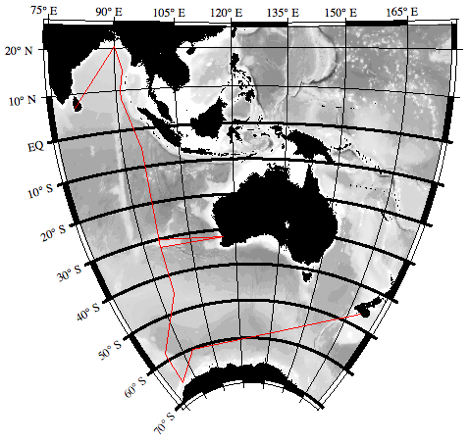

All I8S/I9N PIs and Participants,
For your information, we have attached the I8S/I9N cruise track, a version of the northern portion of the I9N cruise track showing the station position with and without Indian clearance (the stations farther west are without Indian clearance), an Excel text file listing the approximate/intended positions and approximate depths-to-bottom of the I8S/I9N stations (for the version assuming Indian clearance), and a Word file listing the three sampling depths schemes to be used (same as on P16S).
The column headings on the station positions file are a bit cryptic. “TM” = “one-hour trace metal cast”.
As usual, station positions and sampling depths are only our intentions at this time, and will change with circumstances.
We suggest that sampling instructions (e.g. for tracers such as He, Tr, 14C, etc.) be prepared in terms of a philosophy instead of blind adherence to the attached station and sampling depth list. For example, “I'd like to sample <parameter(s)> at <list of latitudes>, with <number> of samples per station. At each station the samples should be distributed approximately as follows <list of depths and/or densities and/or principal hydrographic features>.” Or whatever works for you. The point is that we want to sample your parameter(s) as you intend, so will benefit by understanding your intentions.
Janet and Jim
RepeatHydro_SampleDepths.doc 